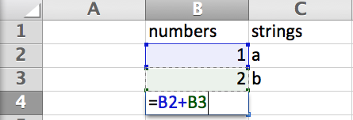

Welcome to our latest installment of technical blog posts! So the question was posed to me: what is the difference between a functional programming and a object oriented programming language? This one was a bit of a toughie for me, so I did some research (thanks Wikipedia!) and talked to some people (Thanks Matt!) and this is what I've come up with. Let's first look at Functional Programming.
If I were to think of the most basic description of functional paradigm, it would be a programming language that takes basic, primitive data (such as String or Integer data), performs a function on those data, and returns modified primitive data. These languages rely on evaluating some fixed input and then providing an output. One of the most accessible examples that I can think of is a spreadsheet software package, like Microsoft Excel.
In Excel, we can have a number of cells that contain different types of primitive data. In order to manipulate those data in an abstract format, we can use a form of functional programming to perform "in-cell operations/functions", which basically let us reference the contents of any given cell/cells, write a function that performs any number of operations, and then display the output of that operation in the new cell. If you are having difficulty imagining what this means, look at the image below:

As the picture above shows, in cell B4, Excel is taking input from cells B2 and B3, evaluating each, and then summing them together. After we submit the function to Excel (click enter), Excel will display a new Integer data type (the Integer, 3) in cell B4. It's as simple as that!
A frequent hallmark of functional programming is how functions are nested within each other. This can be seen and exploited in the Excel software package ad infinitum, but let's look at a simple basic example of what it might look like.
As we see in this example, Excel evaluates each nested function and then uses the functions' outputs to evaluate the next function, finally returning some primitive data output to cell B4. If we want to pick this apart with a play by play, we could describe the process as Excel:
So, that's all well and good. What's the story with Object Oriented Design? How is it different? This conversation really piggy-backs off of ideas regarding classes and objects discussed in last week's blog post.
In Object Oriented programming languages, everything is an object which are built using classes. If we think about the similar examples those we just discussed using Excel, we can also write a program (or simply display to the console) the result of 1 + 2. Using Ruby, let's store each Integer in a variable and then run the operation:
What's interesting about this little bit of code (and here's where the big difference between the two programming paradigms comes into effect) is that while the variables containing the values 1 and 2 represent a primitive data type, they're actually objects that are members of the Integer Ruby class. This means that, as members of that class, they know additional information about the information they contain and also have built in methods that can be called to manipulate their content. This could, for example, be the number of character spaces that the primitive data they hold takes up or whether the Integer that they are holding is an even or odd Integer.
And this, dear friends, is where we draw the ultimate distinction between the paradigms: while functional programming can also tell you whether an Integer is even or odd, that information would not be stored anywhere. If you wanted to find out whether an Integer is even or odd when programming in a functional language, you would have to provide a certain function with an Integer input, it would evaluate the input, and then it would return a true or false statement based on the output. There is no way that the information automatically stored in the primitive data. In contrast, Ruby objects (as well as objects in other languages) store, or at the very least are capable of storing using a method like #instance_variable_set, those attributes within themselves.
As Steve Jobs said, "[Objects] have knowledge inside them about how to do things and have memory inside them so they can remember things. And rather than interacting with them at a very low level, you interact with them at a very high level of abstraction...They encapsulate complexity, and the interfaces to that complexity are high level."